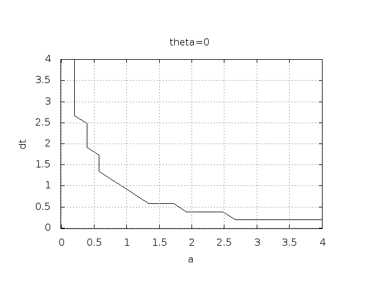

Analysis of finite difference equations
We address the ODE for exponential decay, $$ \begin{equation} u'(t) = -au(t),\quad u(0)=I, \end{equation} $$ where \( a \) and \( I \) are given constants. This problem is solved by the \( \theta \)-rule finite difference scheme, resulting in the recursive equations $$ \begin{equation} u^{n+1} = \frac{1 - (1-\theta) a\Delta t}{1 + \theta a\Delta t}u^n \tag{50} \end{equation} $$ for the numerical solution \( u^{n+1} \), which approximates the exact solution \( \uex \) at time point \( t_{n+1} \). For constant mesh spacing, which we assume here, \( t_{n+1}=(n+1)\Delta t \).
Discouraging numerical solutions. Choosing \( I=1 \), \( a=2 \), and running experiments with \( \theta =1,0.5, 0 \) for \( \Delta t=1.25, 0.75, 0.5, 0.1 \), gives the results in Figures 10, 11, and 12.
Figure 10: Backward Euler.

Figure 11: Crank-Nicolson.

Figure 12: Forward Euler.

The characteristics of the displayed curves can be summarized as follows:
- The Backward Euler scheme gives a monotone solution in all cases, lying above the exact curve.
- The Crank-Nicolson scheme gives the most accurate results, but for \( \Delta t=1.25 \) the solution oscillates.
- The Forward Euler scheme gives a growing, oscillating solution for \( \Delta t=1.25 \); a decaying, oscillating solution for \( \Delta t=0.75 \); a strange solution \( u^n=0 \) for \( n\geq 1 \) when \( \Delta t=0.5 \); and a solution seemingly as accurate as the one by the Backward Euler scheme for \( \Delta t = 0.1 \), but the curve lies below the exact solution.
- Under what circumstances, i.e., values of the input data \( I \), \( a \), and \( \Delta t \) will the Forward Euler and Crank-Nicolson schemes result in undesired oscillatory solutions?
- How does \( \Delta t \) impact the error in the numerical solution?
For our simple model problem we can answer the second question very precisely, but we will also look at simplified formulas for small \( \Delta t \) and touch upon important concepts such as convergence rate and the order of a scheme. Other fundamental concepts mentioned are stability, consistency, and convergence.
Experimental investigation of oscillatory solutions
To address the first question above, we may set up an experiment where we loop over values of \( I \), \( a \), and \( \Delta t \) in our chosen model problem. For each experiment, we flag the solution as oscillatory if $$ u^{n} > u^{n-1},$$ for some value of \( n \). This seems like a reasonable choice, since we expect \( u^n \) to decay with \( n \), but oscillations will make \( u \) increase over a time step. Doing some initial experimentation with varying \( I \), \( a \), and \( \Delta t \), quickly reveals that oscillations are independent of \( I \), but they do depend on \( a \) and \( \Delta t \). We can therefore limit the investigation to vary \( a \) and \( \Delta t \). Based on this observation, we introduce a two-dimensional function \( B(a,\Delta t) \) which is 1 if oscillations occur and 0 otherwise. We can visualize \( B \) as a contour plot (lines for which \( B=\hbox{const} \)). The contour \( B=0.5 \) corresponds to the borderline between oscillatory regions with \( B=1 \) and monotone regions with \( B=0 \) in the \( a,\Delta t \) plane.
The \( B \) function is defined at discrete \( a \) and \( \Delta t \) values.
Say we have given \( P \) values for \( a \), \( a_0,\ldots,a_{P-1} \), and
\( Q \) values for \( \Delta t \), \( \Delta t_0,\ldots,\Delta t_{Q-1} \).
These \( a_i \) and \( \Delta t_j \) values, \( i=0,\ldots,P-1 \),
\( j=0,\ldots,Q-1 \), form a rectangular mesh of \( P\times Q \) points
in the plane spanned by \( a \) and \( \Delta t \).
At each point \( (a_i, \Delta t_j) \), we associate
the corresponding value \( B(a_i,\Delta t_j) \), denoted \( B_{ij} \).
The \( B_{ij} \) values are naturally stored in a two-dimensional
array. We can thereafter create a plot of the
contour line \( B_{ij}=0.5 \) dividing the oscillatory and monotone
regions. The file decay_osc_regions.py given below (osc_regions stands for "oscillatory regions") contains all nuts and
bolts to produce the \( B=0.5 \) line in Figures 13
and 14. The oscillatory region is above this line.
from decay_mod import solver
import numpy as np
import scitools.std as st
def non_physical_behavior(I, a, T, dt, theta):
"""
Given lists/arrays a and dt, and numbers I, dt, and theta,
make a two-dimensional contour line B=0.5, where B=1>0.5
means oscillatory (unstable) solution, and B=0<0.5 means
monotone solution of u'=-au.
"""
a = np.asarray(a); dt = np.asarray(dt) # must be arrays
B = np.zeros((len(a), len(dt))) # results
for i in range(len(a)):
for j in range(len(dt)):
u, t = solver(I, a[i], T, dt[j], theta)
# Does u have the right monotone decay properties?
correct_qualitative_behavior = True
for n in range(1, len(u)):
if u[n] > u[n-1]: # Not decaying?
correct_qualitative_behavior = False
break # Jump out of loop
B[i,j] = float(correct_qualitative_behavior)
a_, dt_ = st.ndgrid(a, dt) # make mesh of a and dt values
st.contour(a_, dt_, B, 1)
st.grid('on')
st.title('theta=%g' % theta)
st.xlabel('a'); st.ylabel('dt')
st.savefig('osc_region_theta_%s.png' % theta)
st.savefig('osc_region_theta_%s.pdf' % theta)
non_physical_behavior(
I=1,
a=np.linspace(0.01, 4, 22),
dt=np.linspace(0.01, 4, 22),
T=6,
theta=0.5)
Figure 13: Forward Euler scheme: oscillatory solutions occur for points above the curve.

Figure 14: Crank-Nicolson scheme: oscillatory solutions occur for points above the curve.

By looking at the curves in the figures one may guess that \( a\Delta t \) must be less than a critical limit to avoid the undesired oscillations. This limit seems to be about 2 for Crank-Nicolson and 1 for Forward Euler. We shall now establish a precise mathematical analysis of the discrete model that can explain the observations in our numerical experiments.
Exact numerical solution
Starting with \( u^0=I \), the simple recursion (50) can be applied repeatedly \( n \) times, with the result that $$ \begin{equation} u^{n} = IA^n,\quad A = \frac{1 - (1-\theta) a\Delta t}{1 + \theta a\Delta t}\tp \tag{51} \end{equation} $$
Regardless of the solution approach, we have obtained a formula for \( u^n \). This formula can explain everything we see in the figures above, but it also gives us a more general insight into accuracy and stability properties of the three schemes.
Stability
Since \( u^n \) is a factor \( A \) raised to an integer power \( n \), we realize that \( A < 0 \) will imply \( u^n < 0 \) for odd \( n \) and \( u^n > 0 \) for even \( n \). That is, the solution oscillates between the mesh points. We have oscillations due to \( A < 0 \) when $$ \begin{equation} (1-\theta)a\Delta t > 1 \tp \tag{52} \end{equation} $$ Since \( A>0 \) is a requirement for having a numerical solution with the same basic property (monotonicity) as the exact solution, we may say that \( A>0 \) is a stability criterion. Expressed in terms of \( \Delta t \) the stability criterion reads $$ \begin{equation} \Delta t < \frac{1}{(1-\theta)a}\tp \end{equation} $$
The Backward Euler scheme is always stable since \( A < 0 \) is impossible for \( \theta=1 \), while non-oscillating solutions for Forward Euler and Crank-Nicolson demand \( \Delta t\leq 1/a \) and \( \Delta t\leq 2/a \), respectively. The relation between \( \Delta t \) and \( a \) look reasonable: a larger \( a \) means faster decay and hence a need for smaller time steps.
Looking at the upper left plot in Figure 12, we see that \( \Delta t=1.25 \), and remembering that \( a=2 \) in these experiments, \( A \) can be calculated to be \( -1.5 \), so the Forward Euler solution becomes \( u^n=(-1.5)^n \) (\( I=1 \)). This solution oscillates and grows. The upper right plot has \( a\Delta t = 2\cdot 0.75=1.5 \), so \( A=-0.5 \), and \( u^n=(-0.5)^n \) decays but oscillates. The lower left plot is a peculiar case where the Forward Euler scheme produces a solution that is stuck on the \( t \) axis. Now we can understand why this is so, because \( a\Delta t= 2\cdot 0.5=1 \), which gives \( A=0 \), and therefore \( u^n=0 \) for \( n\geq 1 \). The decaying oscillations in the Crank-Nicolson scheme in the upper left plot in Figure 11 for \( \Delta t=1.25 \) are easily explained by the fact that \( A\approx -0.11 < 0 \).
The factor \( A \) is called the amplification factor since the solution at a new time level is \( A \) times the solution at the previous time level. For a decay process, we must obviously have \( |A|\leq 1 \), which is fulfilled for all \( \Delta t \) if \( \theta \geq 1/2 \). Arbitrarily large values of \( u \) can be generated when \( |A|>1 \) and \( n \) is large enough. The numerical solution is in such cases totally irrelevant to an ODE modeling decay processes! To avoid this situation, we must for \( \theta < 1/2 \) have $$ \begin{equation} \Delta t \leq \frac{2}{(1-2\theta)a}, \end{equation} $$ which means \( \Delta t < 2/a \) for the Forward Euler scheme.
- The Forward Euler method is a conditionally stable scheme because it requires \( \Delta t < 2/a \) for avoiding growing solutions and \( \Delta t < 1/a \) for avoiding oscillatory solutions.
- The Crank-Nicolson is unconditionally stable with respect to growing solutions, while it is conditionally stable with the criterion \( \Delta t < 2/a \) for avoiding oscillatory solutions.
- The Backward Euler method is unconditionally stable with respect to growing and oscillatory solutions - any \( \Delta t \) will work.
Comparing amplification factors
After establishing how \( A \) impacts the qualitative features of the solution, we shall now look more into how well the numerical amplification factor approximates the exact one. The exact solution reads \( u(t)=Ie^{-at} \), which can be rewritten as $$ \begin{equation} {\uex}(t_n) = Ie^{-a n\Delta t} = I(e^{-a\Delta t})^n \tp \end{equation} $$ From this formula we see that the exact amplification factor is $$ \begin{equation} \Aex = e^{-a\Delta t} \tp \end{equation} $$
We see from all of our analysis that the exact and numerical amplification factors depend on \( a \) and \( \Delta t \) through the dimensionless product \( a\Delta t \): whenever there is a \( \Delta t \) in the analysis, there is always an associated \( a \) parameter. Therefore, it is convenient to introduce a symbol for this product, \( p=a\Delta t \), and view \( A \) and \( \Aex \) as functions of \( p \). Figure 15 shows these functions. The two amplification factors are clearly closest for the Crank-Nicolson method, but that method has the unfortunate oscillatory behavior when \( p>2 \).
Figure 15: Comparison of amplification factors.

One can bring the present model problem on dimensionless form (through a process called scaling, see the section Scaling for a brief introduction and the document Scaling [4] for a comprehensive treatment). The scaled modeled has a modified time \( \bar t = at \) and modified response \( \bar u =u/I \) such that the model reads \( d\bar u/d\bar t = -\bar u \), \( \bar u(0)=1 \). Analyzing this model, where there are no physical parameters, we find that \( \Delta \bar t \) is the key parameter for numerical performance. In the unscaled model, this corresponds to \( \Delta \bar t = a\Delta t \).
It is common that the numerical performance of methods for solving ordinary and partial differential equations is governed by dimensionless parameters that combine mesh sizes with physical parameters.
Series expansion of amplification factors
As an alternative to the visual understanding inherent in Figure 15, there is a strong tradition in numerical analysis to establish formulas for approximation errors when the discretization parameter, here \( \Delta t \), becomes small. In the present case, we let \( p \) be our small discretization parameter, and it makes sense to simplify the expressions for \( A \) and \( \Aex \) by using Taylor polynomials around \( p=0 \). The Taylor polynomials are accurate for small \( p \) and greatly simplifies the comparison of the analytical expressions since we then can compare polynomials, term by term.
Calculating the Taylor series for \( \Aex \) is easily done by hand, but
the three versions of \( A \) for \( \theta=0,1,{\half} \) lead to more
cumbersome calculations.
Nowadays, analytical computations can benefit greatly by
symbolic computer algebra software. The Python package sympy
represents a powerful computer algebra system, not yet as sophisticated as
the famous Maple and Mathematica systems, but it is free and
very easy to integrate with our numerical computations in Python.
When using sympy, it is convenient to enter an interactive Python
shell where the results of expressions and statements can be shown
immediately.
Here is a simple example. We strongly recommend to use
isympy (or ipython) for such interactive sessions.
Let us illustrate sympy with a standard Python shell syntax
(>>> prompt) to compute a Taylor polynomial approximation to \( e^{-p} \):
>>> from sympy import *
>>> # Create p as a mathematical symbol with name 'p'
>>> p = Symbol('p')
>>> # Create a mathematical expression with p
>>> A_e = exp(-p)
>>>
>>> # Find the first 6 terms of the Taylor series of A_e
>>> A_e.series(p, 0, 6)
1 + (1/2)*p**2 - p - 1/6*p**3 - 1/120*p**5 + (1/24)*p**4 + O(p**6)
Lines with >>> represent input lines, whereas without
this prompt represent the result of the previous command (note that
isympy and ipython apply other prompts, but in this text
we always apply >>> for interactive Python computing).
Apart from the order of the powers, the computed formula is easily
recognized as the beginning of the Taylor series for \( e^{-p} \).
Let us define the numerical amplification factor where \( p \) and \( \theta \) enter the formula as symbols:
>>> theta = Symbol('theta')
>>> A = (1-(1-theta)*p)/(1+theta*p)
To work with the factor for the Backward Euler scheme we
can substitute the value 1 for theta:
>>> A.subs(theta, 1)
1/(1 + p)
Similarly, we can replace theta by 1/2 for Crank-Nicolson,
preferably using an exact rational representation of 1/2 in sympy:
>>> half = Rational(1,2)
>>> A.subs(theta, half)
1/(1 + (1/2)*p)*(1 - 1/2*p)
The Taylor series of the amplification factor for the Crank-Nicolson scheme can be computed as
>>> A.subs(theta, half).series(p, 0, 4)
1 + (1/2)*p**2 - p - 1/4*p**3 + O(p**4)
We are now in a position to compare Taylor series:
>>> FE = A_e.series(p, 0, 4) - A.subs(theta, 0).series(p, 0, 4)
>>> BE = A_e.series(p, 0, 4) - A.subs(theta, 1).series(p, 0, 4)
>>> CN = A_e.series(p, 0, 4) - A.subs(theta, half).series(p, 0, 4 )
>>> FE
(1/2)*p**2 - 1/6*p**3 + O(p**4)
>>> BE
-1/2*p**2 + (5/6)*p**3 + O(p**4)
>>> CN
(1/12)*p**3 + O(p**4)
From these expressions we see that the error \( A-\Aex\sim \Oof{p^2} \) for the Forward and Backward Euler schemes, while \( A-\Aex\sim \Oof{p^3} \) for the Crank-Nicolson scheme. The notation \( \Oof{p^m} \) here means a polynomial in \( p \) where \( p^m \) is the term of lowest-degree, and consequently the term that dominates the expression for \( p < 0 \). We call this the leading order term. As \( p\rightarrow 0 \), the leading order term clearly dominates over the higher-order terms (think of \( p=0.01 \): \( p \) is a hundred times larger than \( p^2 \)).
Now, \( a \) is a given parameter in the problem, while \( \Delta t \) is what we can vary. Not surprisingly, the error expressions are usually written in terms \( \Delta t \). When then have $$ \begin{equation} A-\Aex = \left\lbrace\begin{array}{ll} \Oof{\Delta t^2}, & \hbox{Forward and Backward Euler},\\ \Oof{\Delta t^3}, & \hbox{Crank-Nicolson} \end{array}\right. \end{equation} $$
We say that the Crank-Nicolson scheme has an error in the amplification factor of order \( \Delta t^3 \), while the two other schemes are of order \( \Delta t^2 \) in the same quantity.
What is the significance of the order expression? If we halve \( \Delta t \), the error in amplification factor at a time level will be reduced by a factor of 4 in the Forward and Backward Euler schemes, and by a factor of 8 in the Crank-Nicolson scheme. That is, as we reduce \( \Delta t \) to obtain more accurate results, the Crank-Nicolson scheme reduces the error more efficiently than the other schemes.
The fraction of numerical and exact amplification factors
An alternative comparison of the schemes is provided by looking at the ratio \( A/\Aex \), or the error \( 1-A/\Aex \) in this ratio:
>>> FE = 1 - (A.subs(theta, 0)/A_e).series(p, 0, 4)
>>> BE = 1 - (A.subs(theta, 1)/A_e).series(p, 0, 4)
>>> CN = 1 - (A.subs(theta, half)/A_e).series(p, 0, 4)
>>> FE
(1/2)*p**2 + (1/3)*p**3 + O(p**4)
>>> BE
-1/2*p**2 + (1/3)*p**3 + O(p**4)
>>> CN
(1/12)*p**3 + O(p**4)
The leading-order terms have the same powers as in the analysis of \( A-\Aex \).
The global error at a point
The error in the amplification factor reflects the error when progressing from time level \( t_n \) to \( t_{n-1} \) only. That is, we disregard the error already present in the solution at \( t_{n-1} \). The real error at a point, however, depends on the error development over all previous time steps. This error, \( e^n = u^n-\uex(t_n) \), is known as the global error. We may look at \( u^n \) for some \( n \) and Taylor expand the mathematical expressions as functions of \( p=a\Delta t \) to get a simple expression for the global error (for small \( p \)):
>>> n = Symbol('n')
>>> u_e = exp(-p*n)
>>> u_n = A**n
>>> FE = u_e.series(p, 0, 4) - u_n.subs(theta, 0).series(p, 0, 4)
>>> BE = u_e.series(p, 0, 4) - u_n.subs(theta, 1).series(p, 0, 4)
>>> CN = u_e.series(p, 0, 4) - u_n.subs(theta, half).series(p, 0, 4)
>>> FE
(1/2)*n*p**2 - 1/2*n**2*p**3 + (1/3)*n*p**3 + O(p**4)
>>> BE
(1/2)*n**2*p**3 - 1/2*n*p**2 + (1/3)*n*p**3 + O(p**4)
>>> CN
(1/12)*n*p**3 + O(p**4)
Note that sympy does not sort the polynomial terms in the output,
so \( p^3 \) appears before \( p^2 \) in the output of BE.
For a fixed time \( t \), the parameter \( n \) in these expressions increases as \( p\rightarrow 0 \) since \( t=n\Delta t =\mbox{const} \) and hence \( n \) must increase like \( \Delta t^{-1} \). With \( n \) substituted by \( t/\Delta t \) in the leading-order error terms, these become $$ \begin{align} e^n &= \half n p^2 = {\half}ta^2\Delta t, &\hbox{Forward Euler} \tag{53}\\ e^n &= -\half n p^2 = -{\half}ta^2\Delta t, &\hbox{Backward Euler} \tag{54}\\ e^n &= \frac{1}{12}np^3 = \frac{1}{12}ta^3\Delta t^2, &\hbox{Crank-Nicolson} \tag{55} \end{align} $$ The global error is therefore of second order (in \( \Delta t \)) for the Crank-Nicolson scheme and of first order for the other two schemes.
Integrated errors
It is common to study the norm of the numerical error, as
explained in detail in the section Computing the norm of the error mesh function.
The \( L^2 \) norm can be computed by treating \( e^n \) as a function
of \( t \) in sympy and performing symbolic integration. For
the Forward Euler scheme we have
p, n, a, dt, t, T, theta = symbols('p n a dt t T 'theta')
A = (1-(1-theta)*p)/(1+theta*p)
u_e = exp(-p*n)
u_n = A**n
error = u_e.series(p, 0, 4) - u_n.subs(theta, 0).series(p, 0, 4)
# Introduce t and dt instead of n and p
error = error.subs('n', 't/dt').subs(p, 'a*dt')
error = error.as_leading_term(dt) # study only the first term
print error
error_L2 = sqrt(integrate(error**2, (t, 0, T)))
print error_L2
The output reads
sqrt(30)*sqrt(T**3*a**4*dt**2*(6*T**2*a**2 - 15*T*a + 10))/60
which means that the \( L^2 \) error behaves like \( a^2\Delta t \).
Strictly speaking, the numerical error is only defined at the mesh points so it makes most sense to compute the \( \ell^2 \) error $$ ||e^n||_{\ell^2} = \sqrt{\Delta t\sum_{n=0}^{N_t} ({\uex}(t_n) - u^n)^2} \tp $$ We have obtained an exact analytical expression for the error at \( t=t_n \), but here we use the leading-order error term only since we are mostly interested in how the error behaves as a polynomial in \( \Delta t \), and then the leading order term will dominate. For the Forward Euler scheme, \( \uex(t_n) - u^n \approx {\half}np^2 \), and we have $$ ||e^n||_{\ell^2}^2 = \Delta t\sum_{n=0}^{N_t} \frac{1}{4}n^2p^4 =\Delta t\frac{1}{4}p^4 \sum_{n=0}^{N_t} n^2\tp $$ Now, \( \sum_{n=0}^{N_t} n^2\approx \frac{1}{3}N_t^3 \). Using this approximation, setting \( N_t =T/\Delta t \), and taking the square root gives the expression $$ \begin{equation} ||e^n||_{\ell^2} = \half\sqrt{\frac{T^3}{3}} a^2\Delta t\tp \tag{56} \end{equation} $$ Calculations for the Backward Euler scheme are very similar and provide the same result, while the Crank-Nicolson scheme leads to $$ \begin{equation} ||e^n||_{\ell^2} = \frac{1}{12}\sqrt{\frac{T^3}{3}}a^3\Delta t^2\tp \tag{57} \end{equation} $$
- the Crank-Nicolson scheme is of second order in \( \Delta t \), and
- the Forward Euler and Backward Euler schemes are of first order in \( \Delta t \).
Truncation error
The truncation error is a very frequently used error measure for finite difference methods. It is defined as the error in the difference equation that arises when inserting the exact solution. Contrary to many other error measures, e.g., the true error \( e^n=\uex(t_n)-u^n \), the truncation error is a quantity that is easily computable.
Before reading on, it is wise to review the section Mathematical derivation of finite difference formulas on how Taylor polynomials were used to derive finite differences and quantify the error in the formulas. Very similar reasoning, and almost identical mathematical details, will be carried out below, but in a slightly different context. Now, the focus is on the error when solving a differential equation, while in the section Mathematical derivation of finite difference formulas we derived errors for a finite difference formula. These errors are tightly connected in the present model problem.
Let us illustrate the calculation of the truncation error for the Forward Euler scheme. We start with the difference equation on operator form, $$ \lbrack D_t^+ u = -au\rbrack^n,$$ which is the short form for $$ \frac{u^{n+1}-u^n}{\Delta t} = -au^n\tp$$ The idea is to see how well the exact solution \( \uex(t) \) fulfills this equation. Since \( \uex(t) \) in general will not obey the discrete equation, we get an error in the discrete equation. This error is called a residual, denoted here by \( R^n \): $$ \begin{equation} R^n = \frac{\uex(t_{n+1})-\uex(t_n)}{\Delta t} + a\uex(t_n) \tp \tag{58} \end{equation} $$ The residual is defined at each mesh point and is therefore a mesh function with a superscript \( n \).
The interesting feature of \( R^n \) is to see how it depends on the discretization parameter \( \Delta t \). The tool for reaching this goal is to Taylor expand \( \uex \) around the point where the difference equation is supposed to hold, here \( t=t_n \). We have that $$ \uex(t_{n+1}) = \uex(t_n) + \uex'(t_n)\Delta t + \half\uex''(t_n) \Delta t^2 + \cdots, $$ which may be used to reformulate the fraction in (58) so that $$ R^n = \uex'(t_n) + \half\uex''(t_n)\Delta t + \ldots + a\uex(t_n)\tp$$ Now, \( \uex \) fulfills the ODE \( \uex'=-a\uex \), which means that the first and last term cancel and we have $$ R^n = \half\uex''(t_n)\Delta t + \Oof{\Delta t^2}\tp $$ This \( R^n \) is the truncation error, which for the Forward Euler is seen to be of first order in \( \Delta t \) as \( \Delta \rightarrow 0 \).
The above procedure can be repeated for the Backward Euler and the Crank-Nicolson schemes. We start with the scheme in operator notation, write it out in detail, Taylor expand \( \uex \) around the point \( \tilde t \) at which the difference equation is defined, collect terms that correspond to the ODE (here \( \uex' + a\uex \)), and identify the remaining terms as the residual \( R \), which is the truncation error. The Backward Euler scheme leads to $$ R^n \approx -\half\uex''(t_n)\Delta t, $$ while the Crank-Nicolson scheme gives $$ R^{n+\half} \approx \frac{1}{24}\uex'''(t_{n+\half})\Delta t^2,$$ when \( \Delta t\rightarrow 0 \).
The order \( r \) of a finite difference scheme is often defined through the leading term \( \Delta t^r \) in the truncation error. The above expressions point out that the Forward and Backward Euler schemes are of first order, while Crank-Nicolson is of second order. We have looked at other error measures in other sections, like the error in amplification factor and the error \( e^n=\uex(t_n)-u^n \), and expressed these error measures in terms of \( \Delta t \) to see the order of the method. Normally, calculating the truncation error is more straightforward than deriving the expressions for other error measures and therefore the easiest way to establish the order of a scheme.
Consistency, stability, and convergence
Three fundamental concepts when solving differential equations by numerical methods are consistency, stability, and convergence. We shall briefly touch upon these concepts below in the context of the present model problem.
Consistency means that the error in the difference equation, measured through the truncation error, goes to zero as \( \Delta t\rightarrow 0 \). Since the truncation error tells how well the exact solution fulfills the difference equation, and the exact solution fulfills the differential equation, consistency ensures that the difference equation approaches the differential equation in the limit. The expressions for the truncation errors in the previous section are all proportional to \( \Delta t \) or \( \Delta t^2 \), hence they vanish as \( \Delta t\rightarrow 0 \), and all the schemes are consistent. Lack of consistency implies that we actually solve some other differential equation in the limit \( \Delta t\rightarrow 0 \) than we aim at.
Stability means that the numerical solution exhibits the same qualitative properties as the exact solution. This is obviously a feature we want the numerical solution to have. In the present exponential decay model, the exact solution is monotone and decaying. An increasing numerical solution is not in accordance with the decaying nature of the exact solution and hence unstable. We can also say that an oscillating numerical solution lacks the property of monotonicity of the exact solution and is also unstable. We have seen that the Backward Euler scheme always leads to monotone and decaying solutions, regardless of \( \Delta t \), and is hence stable. The Forward Euler scheme can lead to increasing solutions and oscillating solutions if \( \Delta t \) is too large and is therefore unstable unless \( \Delta t \) is sufficiently small. The Crank-Nicolson can never lead to increasing solutions and has no problem to fulfill that stability property, but it can produce oscillating solutions and is unstable in that sense, unless \( \Delta t \) is sufficiently small.
Convergence implies that the global (true) error mesh function \( e^n = \uex(t_n)-u^n\rightarrow 0 \) as \( \Delta t\rightarrow 0 \). This is really what we want: the numerical solution gets as close to the exact solution as we request by having a sufficiently fine mesh.
Convergence is hard to establish theoretically, except in quite simple problems like the present one. Stability and consistency are much easier to calculate. A major breakthrough in the understanding of numerical methods for differential equations came in 1956 when Lax and Richtmeyer established equivalence between convergence on one hand and consistency and stability on the other (the Lax equivalence theorem). In practice it meant that one can first establish that a method is stable and consistent, and then it is automatically convergent (which is much harder to establish). The result holds for linear problems only, and in the world of nonlinear differential equations the relations between consistency, stability, and convergence are much more complicated.
We have seen in the previous analysis that the Forward Euler, Backward Euler, and Crank-Nicolson schemes are convergent (\( e^n\rightarrow 0 \)), that they are consistent (\( R^n\rightarrow 0 \), and that they are stable under certain conditions on the size of \( \Delta t \). We have also derived explicit mathematical expressions for \( e^n \), the truncation error, and the stability criteria.
Exercises
Exercise 7: Visualize the accuracy of finite differences
The purpose of this exercise is to visualize the accuracy of finite difference approximations of the derivative of a given function. For any finite difference approximation, take the Forward Euler difference as an example, and any specific function, take \( u=e^{-at} \), we may introduce an error fraction $$ E = \frac{[D_t^+ u]^n}{u'(t_n)} = \frac{\exp{(-a(t_n+\Delta t))} - \exp{(-at_n)}}{-a\exp{(-at_n)\Delta t}} = \frac{1}{a\Delta t}\left(1 -\exp{(-a\Delta t)}\right), $$ and view \( E \) as a function of \( \Delta t \). We expect that \( \lim_{\Delta t\rightarrow 0}E=1 \), while \( E \) may deviate significantly from unity for large \( \Delta t \). How the error depends on \( \Delta t \) is best visualized in a graph where we use a logarithmic scale for \( \Delta t \), so we can cover many orders of magnitude of that quantity. Here is a code segment creating an array of 100 intervals, on the logarithmic scale, ranging from \( 10^{-6} \) to \( 10^{-0.5} \) and then plotting \( E \) versus \( p=a\Delta t \) with logarithmic scale on the \( p \) axis:
from numpy import logspace, exp
from matplotlib.pyplot import semilogx
p = logspace(-6, -0.5, 101)
y = (1-exp(-p))/p
semilogx(p, y)
Illustrate such errors for the finite difference operators \( [D_t^+u]^n \) (forward), \( [D_t^-u]^n \) (backward), and \( [D_t u]^n \) (centered) in the same plot.
Perform a Taylor series expansions of the error fractions and find the leading order \( r \) in the expressions of type \( 1 + Cp^r + \Oof{p^{r+1}} \), where \( C \) is some constant.
To save manual calculations and learn more about symbolic computing,
make functions for the three difference operators and use sympy
to perform the symbolic differences, differentiation, and Taylor series
expansion. To plot a symbolic expression E against p, convert the
expression to a Python function first: E = sympy.lamdify([p], E).
Here is Python code for the exercise:
import sympy as sym
# Define finite difference operators as functions
def D_f(u, dt, t):
return (u(t + dt) - u(t))/dt
def D_b(u, dt, t):
return (u(t) - u(t - dt))/dt
def D_c(u, dt, t):
return (u(t + dt) - u(t - dt))/(2*dt)
def make_plot():
def u(t):
return sym.exp(-a*t)
a, t, dt, p = sym.symbols('a t dt p')
dudt = sym.diff(u(t), t)
from numpy import logspace, exp
from matplotlib.pyplot import (
semilogx, legend, show, loglog, savefig)
# Map operator function name to logical names
operator2name = dict(
D_f='forward', D_b='backward', D_c='central')
legends = []
for operator in D_f, D_b, D_c:
E = operator(u, dt, t)/dudt
# Expand, set p=a*dt, simplify
E = sym.expand(E)
E = E.subs(a*dt, p)
E = sym.simplify(E)
print '%s E:' % operator2name[operator.__name__], E
print 'Taylor series:', E.series(p, 0, 3)
latex_expr = sym.latex(E)
E = sym.lambdify([p], E, modules='numpy')
p_values = logspace(-6, -0.5, 101)
y = E(p_values)
semilogx(p_values, y)
legends.append(operator2name[operator.__name__] +
': $' + latex_expr + '$')
legend(legends, loc='lower left')
savefig('tmp.png'); savefig('tmp.pdf')
show()
make_plot()
The output of the Taylor polynomials reads
forward E: (exp(p) - 1)*exp(-p)/p
Taylor series: 1 - p/2 + p**2/6 + O(p**3)
backward E: (exp(p) - 1)/p
Taylor series: 1 + p/2 + p**2/6 + O(p**3)
central E: sinh(p)/p
Taylor series: 1 + p**2/6 + O(p**3)
Figure 16: Plot for Exercise 7: Visualize the accuracy of finite differences.

Filename: decay_plot_fd_error.
Exercise 8: Explore the \( \theta \)-rule for exponential growth
This exercise asks you to solve the ODE \( u'=-au \) with \( a < 0 \) such that the ODE models exponential growth instead of exponential decay. A central theme is to investigate numerical artifacts and non-physical solution behavior.
a) Set \( a=-1 \) and run experiments with \( \theta=0, 0.5, 1 \) for various values of \( \Delta t \) to uncover numerical artifacts. Recall that the exact solution is a monotone, growing function when \( a < 0 \). Oscillations or significantly wrong growth are signs of wrong qualitative behavior.
From the experiments, select four values of \( \Delta t \) that demonstrate the kind of numerical solutions that are characteristic for this model.
The schemes are exactly the same as in the case \( a>0 \). A program solving the problem numerically is shown below.
from numpy import *
# Exercise a
def solver(I, a, T, dt, theta):
"""Solve u'=-a*u, u(0)=I, for t in (0,T] with steps of dt."""
dt = float(dt) # avoid integer division
Nt = int(round(T/dt)) # no of time intervals
T = Nt*dt # adjust T to fit time step dt
u = zeros(Nt+1) # array of u[n] values
t = linspace(0, T, Nt+1) # time mesh
u[0] = I # assign initial condition
for n in range(0, Nt): # n=0,1,...,Nt-1
u[n+1] = (1 - (1-theta)*a*dt)/(1 + theta*dt*a)*u[n]
return u, t
def exact_solution(t, I, a):
return I*exp(-a*t)
def numerical_and_exact(theta, I, a, T, dt):
"""Compare the numerical and exact solution in a plot."""
u, t = solver(I=I, a=a, T=T, dt=dt, theta=theta)
t_e = linspace(0, T, 1001) # fine mesh for u_e
u_e = exact_solution(t_e, I, a)
return u, t, u_e, t_e
def demo(dt):
from matplotlib.pyplot import (
plot, xlabel, ylabel, legend, title, savefig, show)
for theta in [0, 0.5, 1]:
u, t, u_e, t_e = numerical_and_exact(
I=1, a=-1, T=2.5, dt=dt, theta=theta)
xlabel('t')
ylabel('u')
plot(t, u)
plot(t_e, u_e, 'k-') # black line
legend(['FE', 'CN', 'BE', 'exact'], loc='upper left')
title('Timestep: %g' % dt)
savefig('tmp_%g.png' % dt); savefig('tmp_%g.pdf' % dt)
show()
We can try different \( \Delta t \) values: 3, 0.5, 0.1, and 0.01.

b) Write up the amplification factor and plot it for \( \theta=0,0.5,1 \) together with the exact one for \( a\Delta t < 0 \). Use the plot to explain the observations made in the experiments.
Modify the decay_ampf_plot.py code.
The amplification factor is the same as when \( a>0 \), but here we introduce \( p=-a\Delta t>0 \) since \( a < 0 \): $$ \begin{equation} A(p) = \frac{1+(1-\theta)p}{1-\theta p}. \end{equation} $$ A major problem is that the denominator can be zero when \( a < 0 \). This happens for \( p=1/\theta \). The exact amplification factor is \( \Aex = e^{p} \).
Here is code for computing and plotting the factors:
# Exercise b
def plot_amplification_factors(names):
# Substitute -p by p since a is negative for a growth model
def A_exact(p):
return exp(p)
def A(p, theta):
return (1+(1-theta)*p)/(1-theta*p)
def amplification_factor(names):
# Use SciTools since it adds markers to colored lines
from scitools.std import (
plot, title, xlabel, ylabel, hold, savefig,
axis, legend, grid, show, figure)
figure()
curves = {}
p = linspace(0, 3, 99)
curves['exact'] = A_exact(p)
plot(p, curves['exact'])
hold('on')
name2theta = dict(FE=0, BE=1, CN=0.5)
for name in names:
curves[name] = A(p, name2theta[name])
plot(p, curves[name])
axis([p[0], p[-1], -20, 20])
#semilogy(p, curves[name])
plot([p[0], p[-1]], [0, 0], '--') # A=0 line
title('Amplification factors')
grid('on')
legend(['exact'] + names, loc='lower left', fancybox=True)
xlabel(r'$p=-a\cdot dt$')
ylabel('Amplification factor')
savefig('A_growth.png'); savefig('A_growth.pdf')
#show()
amplification_factor(names)

Filename: exponential_growth.